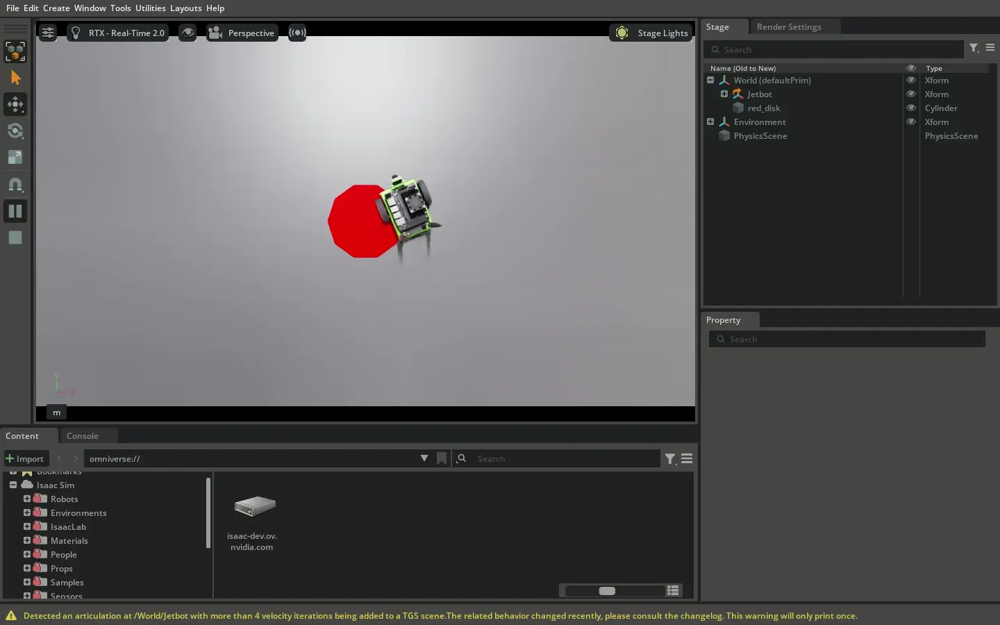
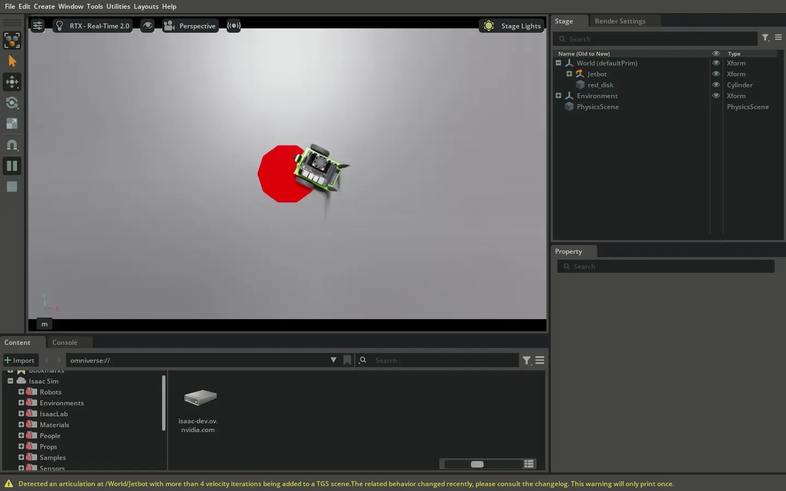
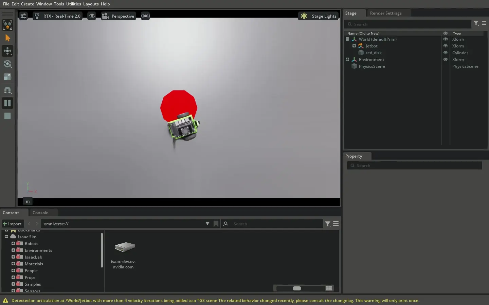

Controllers 与 RobotState#
本教程演示如何使用 Motion Generation API 的基本构建块构建完整的机器人控制器：
RobotState类BaseController接口
BaseController 接口适用于移动机器人、关节机器人以及组合系统（如人形机器人）。本教程为 Jetbot 创建一个差速驱动控制器，并可选地组合低通滤波器控制器，以提高在噪声条件下的鲁棒性。
你将构建一个控制器，该控制器：
将期望的机器人速度转换为车轮指令
应用滤波以实现平滑运动
在实时仿真循环中运行
所有代码示例均来自完整、可运行的文件 mobile_robot_control_example.py：
# Mobile robot controller with differential drive and optional filtering
./python.sh standalone_examples/api/isaacsim.robot_motion.experimental.motion_generation/mobile_robot_control_example.py
注意
你可以使用参数 --noise 和 --filter 运行此示例，以查看 Jetbot 在不同噪声和滤波启用组合下的表现。
例如，尝试在不使用任何参数的情况下运行，以查看理想条件下且无滤波时的性能。尝试 --noise 以查看噪声输入条件下对控制器性能的不利影响。最后，尝试 --filter --noise 以查看在启用滤波的情况下，控制器在噪声输入条件下的鲁棒性：
# Run with noise and filtering enabled
./python.sh standalone_examples/api/isaacsim.robot_motion.experimental.motion_generation/mobile_robot_control_example.py --noise --filter
理解控制空间#
在使用 BaseController 接口构建控制器之前，你必须理解 RobotState 和 控制空间。
控制空间是 Motion Generation API 工作原理的基础，从一开始就正确理解它们可以避免许多常见问题。
什么是控制空间？#
控制空间表示所有控制器将使用的完整共享空间。它们定义了所有协同工作的控制器必须达成一致的名称（关节、连杆或站点）有序列表。
例如，如果你正在设计一组 6 个控制器，它们将共同控制 9 个关节，那么它们都需要知道这 9 个关节的相同排序。这种共享的排序即为关节空间（robot_joint_space）。同样地，如果多个控制器将控制连杆或站点，它们必须共享相同的连杆空间（robot_link_space）或站点空间（robot_site_space）。
当你创建 RobotState 的任何部分（关节、连杆或站点）时，必须声明这些组件所在的空间。你提供的空间必须在所有协同工作的控制器之间保持一致。
理想工作流#
推荐的工作流是首先定义你的空间，然后再创建任何控制器：
定义你的关节空间：创建一个有序列表，包含任何控制器可能控制的所有关节名称
定义你的连杆空间：创建一个有序列表，包含你希望控制其位姿的所有连杆名称
定义你的站点空间：创建一个有序列表，包含你希望控制其位姿的所有站点名称（末端执行器、工具坐标系）
然后，在创建所有控制器时，使用这些相同的空间定义。这确保了所有控制器对机器人结构有相同的理解，并防止在组合来自不同控制器的状态时出现错误。
控制空间通常从机器人表示中获取（例如，Articulation.dof_names 用于关节空间）。但是，控制器并不依赖于这些来源；它们可以处理任何有序的名称列表，这使得它们具有灵活性，并可用于任何机器人定义。
RobotState 结构#
RobotState 是一种统一的表示形式，支持以不同方式控制机器人的不同部分。一个 RobotState 可以包含：
joints- 关节位置、速度和力矩（关节空间控制）sites- 机器人上特定点的位姿和旋量（站点空间控制）links- 机器人连杆的位姿和旋量（连杆空间控制）root- 机器人根部的位姿和旋量（根部空间控制）
这些字段都是可选的；控制器可以仅指定其想要控制的状态部分。
使用控制空间创建 RobotState#
通常使用组件状态类来创建 RobotState 对象：
JointState.from_name()- 用于关节空间控制（需要robot_joint_space）SpatialState.from_name()- 用于连杆空间或站点空间控制（需要robot_link_space或robot_site_space）RootState- 用于根部空间控制（不需要控制空间，因为只有一个根部）
在创建状态组件时，你提供完整的控制空间（所有名称的有序列表），并指定想要控制的部分。
这允许你创建部分状态；你可以仅控制特定的关节、连杆或站点，并且仅控制所需的属性。
例如，对于关节，你可能通过位置控制某些关节，而通过速度控制其他关节。若要完全跳过某种控制模式，请传入 None。
合并 RobotStates#
combine_robot_states() 函数允许你将两个 RobotState 对象合并在一起。这使得不同的控制器能够同时控制机器人的不同部分。
例如，一个控制器可能控制机器人的手臂关节，另一个控制夹爪，第三个控制底座位置。
如果状态无法合并，combine 函数将返回 None。这种情况仅发生在以下两种情形中：
两个
RobotState对象试图定义同一关节或框架的同一属性（即，两者都试图定义同一关节的速度，或同一站点的位置）。定义的控制空间不匹配（例如，定义且不匹配的
robot_joint_space定义、定义且不匹配的robot_link_space定义、定义且不匹配的robot_site_space定义）。
首先定义你的空间至关重要。如果控制器使用不同的空间定义，它们的状态将无法合并。
控制器接口#
接下来，你需要了解 BaseController 接口。控制器是 Motion Generation API 的核心。
它们根据当前状态和可选的设定点计算期望的机器人状态。
Motion Generation API 中的每个控制器都实现了 BaseController 接口，该接口定义了两个基本方法：
reset()- 将控制器初始化为安全的起始状态。在控制器开始运行之前立即调用一次。forward()- 计算下一个时间步的期望机器人状态。每个时间步调用一次，参数包括：当前时钟时间
当前估计的
RobotState，以及可选的设定点
RobotState（目标）。
forward() 方法返回一个 RobotState，表示下一个期望状态；如果无法产生有效输出，则返回 None。
控制器组合#
该 API 提供了多个便捷类，用于按常见模式组合控制器：
组合控制器#
CombinedController 同时运行多个控制器并合并它们的输出。当你希望不同的控制器控制机器人的不同部分时，这非常适用。CombinedController 会自动合并输出。如果控制器不尝试控制相同的关节或坐标系，它们的状态将无缝合并。
链式控制器#
ChainedController 按顺序运行多个控制器。一个控制器的输出成为下一个控制器的设定点。这对于过滤或处理控制器输出很有用。例如，你可以使用一个滤波器来平滑噪声输入数据，随后使用一个类 PID 控制器驱动机器人到达滤波后的输入。
可选控制器#
SelectableController 允许您在运行时切换不同的控制器。这对于与状态机或行为树等更高级别的控制系统集成非常有用。
通过将多个控制器打包到单个容器中，您可以为操作任务或其他需要多个阶段的任务创建复杂的行为。
容器在切换时会自动对新控制器调用 reset()。
嵌套控制器#
由于所有组合类本身都是控制器，因此您可以嵌套它们以构建复杂的控制层次结构。例如，您可能
拥有一个 CombinedController，其中包含一个 ChainedController 和另一个控制器，并且全部包装在一个 SelectableController 中以便进行运行时切换。
构建我们的移动机器人控制器#
利用控制空间、RobotState 和 BaseController 接口等核心概念，您可以开始构建移动机器人控制器。
从核心的差速驱动控制器开始，添加滤波功能，并将所有内容整合到一个完整的控制循环中。
定义控制空间#
遵循理想的工作流程，定义您的控制空间。对于这个移动机器人控制器，您需要控制机器人的关节（即车轮关节）。
从机器人铰接体（articulation）中获取关节空间（例如，robot.dof_names）。此 robot_joint_space 定义了机器人中所有关节的有序列表。
您创建的所有控制器都将使用相同的空间定义，从而确保它们能够协同工作，并且它们的状态可以组合。
在创建 RobotState 对象时使用此空间，您必须在两个关键位置创建 RobotState 对象：
从机器人读取当前状态时（关节空间）
为机器人设置期望速度时（根空间）
要读取当前机器人状态并创建 RobotState：
def get_estimated_state_from_robot(robot: Articulation, robot_joint_space: list[str]) -> mg.RobotState:
"""Get the current estimated state of the robot.
Args:
robot: The robot articulation
robot_joint_space: The full joint space of the robot
Returns:
RobotState representing the current robot state
"""
# Get current joint positions, velocities, and efforts
return mg.RobotState(
joints=mg.JointState.from_name(
robot_joint_space=robot_joint_space,
positions=(robot_joint_space, robot.get_dof_positions()),
velocities=(robot_joint_space, robot.get_dof_velocities()),
efforts=(robot_joint_space, robot.get_dof_efforts()),
)
)
请注意，这里指定了完整的 robot_joint_space 以及所有关节的位置、速度和力矩。这会创建一个与机器人当前配置相匹配的完整关节状态。
要创建一个 RobotState，其中包含用于为移动机器人设置期望速度的期望根状态：
setpoint_state = mg.RobotState(
root=mg.RootState(
linear_velocity=wp.array([v_linear_command, 0.0, 0.0]), # Forward velocity
angular_velocity=wp.array([0.0, 0.0, v_angular_command]), # Yaw rate
)
)
这会创建一个 RobotState，其中包含期望的根状态（线速度和角速度），并将关节保持为未定义状态。
步骤 1：差速驱动控制器#
您的移动机器人使用差速驱动系统，具有两个可独立控制的车轮。第一个控制器将把期望的机器人速度（我们希望机器人向前移动和转向的速度）转换为各个车轮的速度。这是移动机器人控制器的核心。
初始化：配置控制器参数#
为了根据特定机器人的几何结构配置控制器，差速驱动控制器需要知道车轮半径、车轮间距（轮距），以及可选的速度限制。您还需要指定控制左轮和右轮的关节：
def __init__(
self,
robot_joint_space: list[str],
wheel_radius: float,
wheel_base: float,
) -> None:
self.robot_joint_space = robot_joint_space
self.wheel_radius = wheel_radius
self.wheel_base = wheel_base
self.controlled_joints = ["left_wheel_joint", "right_wheel_joint"]
reset() 方法：初始化控制器#
DifferentialDriveController 是无状态的，因此我们实际上不需要在此处执行任何操作。reset() 方法返回 True：
def reset(
self, estimated_state: mg.RobotState, setpoint_state: Optional[mg.RobotState], t: float, **kwargs: object
) -> bool:
"""Initialize the controller.
The DifferentialDriveController is stateless, so we don't need to do anything here.
Args:
estimated_state: Current robot state accepted for the controller interface.
setpoint_state: Desired robot state accepted for the controller interface.
t: Current controller time, accepted for the controller interface.
**kwargs: Additional controller inputs accepted for interface compatibility.
Returns:
Always True because the controller has no state to reset.
"""
return True
forward() 方法：计算轮子速度#
forward() 方法是控制器执行其工作的地方。为了验证输入：
如果没有根状态，则返回
None如果输入的关节状态未使用与控制器相同的
robot_joint_space，则返回None。否则，使用差速驱动运动学计算轮子速度，并返回所需的
RobotState：
def forward(
self, estimated_state: mg.RobotState, setpoint_state: Optional[mg.RobotState], t: float, **kwargs: object
) -> Optional[mg.RobotState]:
"""Compute desired wheel angular velocities from root velocity setpoint.
Converts desired root linear and angular velocities to wheel angular velocities
using differential drive kinematics:
ω_R = (1/(2r)) * (2V + ωb)
ω_L = (1/(2r)) * (2V - ωb)
where ω is angular velocity (yaw rate), V is linear velocity, r is wheel radius,
and b is wheel base.
Args:
estimated_state: Current state whose joint space identifies the commanded robot.
setpoint_state: Desired root state containing forward and yaw velocities.
t: Current controller time, accepted for the controller interface.
**kwargs: Additional controller inputs accepted for interface compatibility.
Returns:
Joint state commanding left and right wheel velocities, or None when required state is unavailable.
"""
# First, verify that the correct inputs are there
# We need a setpoint root state. If there is no root state, we return None.
if setpoint_state is None or setpoint_state.root is None:
return None
# If the input joint state doesn't use the same robot_joint_space, we return None.
if estimated_state.joints is None or estimated_state.joints.robot_joint_space != self.robot_joint_space:
return None
root_state = setpoint_state.root
# Get desired linear and angular velocities
# Default to zero if not provided
if root_state.linear_velocity is not None:
v_linear = root_state.linear_velocity.numpy()[0] # Forward velocity (x-axis)
else:
v_linear = 0.0
if root_state.angular_velocity is not None:
v_angular = root_state.angular_velocity.numpy()[2] # Yaw rate (z-axis)
else:
v_angular = 0.0
# Convert root velocities to wheel angular velocities using differential drive kinematics
# ω_R = (1/(2r)) * (2V + ωb)
# ω_L = (1/(2r)) * (2V - ωb)
inv_denominator = 1.0 / (2.0 * self.wheel_radius)
omega_left = ((2.0 * v_linear) - (v_angular * self.wheel_base)) * inv_denominator
omega_right = ((2.0 * v_linear) + (v_angular * self.wheel_base)) * inv_denominator
# Output velocity commands for both wheels
return mg.RobotState(
joints=mg.JointState.from_name(
robot_joint_space=self.robot_joint_space,
velocities=(
self.controlled_joints,
wp.array([omega_left, omega_right]),
),
)
)
控制器使用差速驱动运动学将根速度转换为轮子速度。
步骤 2：使用低通滤波器添加平滑处理#
差速驱动控制器可以正常工作，但如果输入速度突然变化，轮子命令可能会变得不连贯。为了使机器人移动更加平滑，请添加一个低通滤波器控制器来平滑轮子速度命令。该滤波器控制器是通用的，可以随时用于关节滤波。该滤波器控制器并非专用于差速驱动控制器。
初始化：配置滤波器#
低通滤波器控制器需要知道机器人的关节空间和滤波器系数 (alpha)。alpha 参数控制应用的滤波程度。较小的值意味着更多的滤波（更平滑但响应更慢）：
def __init__(self, robot_joint_space: list[str], alpha: float = 0.1) -> None:
self.robot_joint_space = robot_joint_space
self.alpha = alpha
# Internal state: filtered data array (shape: (3, N))
self.filtered_data_array = None
The reset() 方法：初始化滤波器状态#
您可以将初始滤波器状态重置为估计状态中底层的关节数据数组。这可以防止机器人出现抖动运动。 如果滤波器初始化时与机器人的确切状态匹配，那么机器人一旦开始运行，就会平滑地过渡到跟随滤波器：
def reset(
self, estimated_state: mg.RobotState, setpoint_state: Optional[mg.RobotState], t: float, **kwargs: object
) -> bool:
"""Initialize the controller.
Resets the initial filter state to be exactly the underlying joint-data array from the estimated state.
This prevents jerky motions - if the filter is initialized to match the exact state of the robot,
then the robot will smoothly transition into following the filter as soon as it starts running.
Args:
estimated_state: Current robot state used to initialize the filter output.
setpoint_state: Desired state whose joint space is validated when present.
t: Current controller time, accepted for the controller interface.
**kwargs: Additional controller inputs accepted for interface compatibility.
Returns:
True when the estimated joint space matches and the setpoint is absent, has no joint state, or has a
matching joint space; otherwise False.
"""
# Validate joint spaces match
if not self._validate_joint_spaces(estimated_state, setpoint_state):
return False
if estimated_state.joints is None:
return False
# Initialize filtered data array to match the estimated state's joint data array
# This ensures smooth transition when the filter starts running
self.filtered_data_array = wp.clone(estimated_state.joints.data_array)
return True
The forward() 方法：应用滤波器#
The forward() 方法对设定值状态的整个底层数据数组应用低通滤波器，同时过滤所有关节输出（位置、速度和力矩）。如果不存在设定值状态，则返回 None：
def forward(
self, estimated_state: mg.RobotState, setpoint_state: Optional[mg.RobotState], t: float, **kwargs: object
) -> Optional[mg.RobotState]:
"""Compute filtered joint state.
Applies low-pass filter to the entire data array of the setpoint state.
Filters all joint outputs (position, velocity, effort) simultaneously.
Args:
estimated_state: Current robot state used to validate the joint space.
setpoint_state: Desired joint state to filter.
t: Current controller time, accepted for the controller interface.
**kwargs: Additional controller inputs accepted for interface compatibility.
Returns:
Filtered joint setpoint, or None if the state is missing, incompatible, or not initialized.
"""
# Validate joint spaces match
if not self._validate_joint_spaces(estimated_state, setpoint_state):
return None
if self.filtered_data_array is None:
return None
# Get input data array from setpoint
if setpoint_state is None or setpoint_state.joints is None:
# No setpoint, return None
return None
input_joint_state = setpoint_state.joints
input_data_array = input_joint_state.data_array
input_valid_array = input_joint_state.valid_array
# Apply low-pass filter to entire data array: filtered = alpha * input + (1 - alpha) * filtered
input_data_np = input_data_array.numpy()
filtered_data_np = self.filtered_data_array.numpy()
filtered_data_np = self.alpha * input_data_np + (1 - self.alpha) * filtered_data_np
self.filtered_data_array = wp.from_numpy(filtered_data_np, dtype=wp.float32)
# Output filtered joint state with same valid array as input
return mg.RobotState(
joints=mg.JointState(
robot_joint_space=self.robot_joint_space,
data_array=self.filtered_data_array,
valid_array=input_valid_array,
)
)
滤波器控制器对整个底层数据数组应用低通滤波器，同时平滑所有关节输出。
步骤 3：组合控制器#
现在，使用 ChainedController 组合您的两个控制器。差速驱动控制器计算轮子速度，然后滤波器在将它们发送到机器人之前对其进行平滑处理：
def differential_drive_control(
robot: Articulation, robot_joint_space: list[str], add_noise: bool = False, use_filter: bool = False
) -> None:
"""Example: Differential drive controller tracking root velocity.
Args:
robot: The robot articulation
robot_joint_space: The full joint space of the robot
add_noise: If True, add noise to the root velocity setpoints
use_filter: If True, wrap the differential controller with a low-pass filter
"""
# Create differential drive controller
# For Jetbot, adjust these parameters as needed
differential_controller = DifferentialDriveController(
robot_joint_space=robot_joint_space,
wheel_radius=0.03, # 3 cm wheel radius
wheel_base=0.1125, # 11.25 cm wheel base
)
# Optionally wrap with low-pass filter using ChainedController
if use_filter:
filter_controller = LowPassFilterController(
robot_joint_space=robot_joint_space,
alpha=0.01, # Low-pass filter coefficient
)
# ChainedController: differential controller output becomes filter input
controller = mg.ChainedController([differential_controller, filter_controller])
else:
controller = differential_controller
# Run the control loop
run_differential_control_loop(controller, robot, robot_joint_space, add_noise=add_noise)
步骤 4：完整的控制循环#
现在我们拥有了所有组件——差速驱动控制器、滤波器，并且它们已经组合在一起。最后一步是将它们全部整合到一个实时运行的控制循环中。
首先，这是我们将期望状态应用到机器人的方式：
def apply_desired_state_to_robot(robot: Articulation, desired_state: mg.RobotState) -> None:
"""Apply a desired RobotState to the robot.
Args:
robot: The robot articulation
desired_state: The desired robot state to apply
"""
if desired_state.joints is None:
return
joint_state = desired_state.joints
# Apply positions if present
if joint_state.positions is not None:
robot.set_dof_position_targets(joint_state.positions, dof_indices=joint_state.position_indices)
# Apply velocities if present
if joint_state.velocities is not None:
robot.set_dof_velocity_targets(joint_state.velocities, dof_indices=joint_state.velocity_indices)
# Apply efforts if present
if joint_state.efforts is not None:
robot.set_dof_efforts(joint_state.efforts, dof_indices=joint_state.effort_indices)
最后，这是将所有内容整合在一起的完整控制循环。我们将期望的线速度和角速度（v_linear 和 v_angular）设置为恒定值，这应该使机器人沿圆形路径运动。如果传递了 --noise 参数，我们会向期望速度添加噪声。
def run_differential_control_loop(
controller: mg.BaseController,
robot: Articulation,
robot_joint_space: list[str],
add_noise: bool = False,
duration_seconds: float = 15.0,
) -> None:
"""Run a real-time control loop with a differential drive controller.
This function provides root velocity setpoints (with optional noise) to the controller.
Args:
controller: The controller to run (differential drive, optionally wrapped with filter)
robot: The robot articulation
robot_joint_space: The full joint space of the robot
add_noise: If True, add noise to the root velocity setpoints
duration_seconds: How long to run the simulation
"""
# Start timeline
timeline = omni.timeline.get_timeline_interface()
timeline.play()
simulation_app.update() # Allow physics to initialize
# Get initial estimated state
estimated_state = get_estimated_state_from_robot(robot, robot_joint_space)
# Reset controller
if not controller.reset(estimated_state, None, 0.0):
return
# Run simulation loop
simulation_time = 0.0
dt = SimulationManager.get_physics_dt()
num_steps = int(duration_seconds / dt)
# setpoint velocities:
v_linear = 0.1 # m/s
v_angular = 1.0 # rad/s
# Noise parameters
noise_std_linear = 0.1 # m/s
noise_std_angular = 1.0 # rad/s
for step in range(num_steps):
# Update simulation
simulation_app.update()
simulation_time += dt
# Get current estimated state
estimated_state = get_estimated_state_from_robot(robot, robot_joint_space)
if simulation_time > 2.0:
# Add noise if requested
v_linear_command = v_linear
v_angular_command = v_angular
if add_noise:
v_linear_command += np.random.normal(0.0, noise_std_linear)
v_angular_command += np.random.normal(0.0, noise_std_angular)
# <start-create-robotstate-root-space-snippet>
setpoint_state = mg.RobotState(
root=mg.RootState(
linear_velocity=wp.array([v_linear_command, 0.0, 0.0]), # Forward velocity
angular_velocity=wp.array([0.0, 0.0, v_angular_command]), # Yaw rate
)
)
# <end-create-robotstate-root-space-snippet>
else:
setpoint_state = None # No setpoint for first 2 seconds (robot comes to stop)
# Run controller
desired_state = controller.forward(estimated_state, setpoint_state, simulation_time)
# Apply desired state to robot
if desired_state is not None:
apply_desired_state_to_robot(robot, desired_state)
# Stop timeline
timeline.pause()
循环：
从机器人获取当前估计状态
创建根速度设定点（线速度和角速度）
调用控制器的
forward()方法将期望状态应用到机器人
每个仿真步骤重复执行
现在，你已从零开始构建了一个完整的移动机器人控制器，使用 RobotState 表示机器人状态，并使用 BaseController 接口计算期望命令。
控制器将高层速度命令转换为平滑的轮子运动，展示了 Motion Generation API 的概念如何在实践中协同工作。
观察控制器性能#
运行独立示例时，你可以观察控制器在不同条件下的表现。
当添加 --noise 参数时，运动变得不连贯，因为噪声输入影响了控制器生成平滑命令的能力。然而，当同时添加 --noise 和 --filter 参数时，运动再次变得平滑，这展示了低通滤波器控制器如何抑制高频噪声。


在无噪声且无滤波的情况下运行控制器。#


在有噪声且无滤波的情况下运行控制器。#


在有噪声且启用滤波的情况下运行控制器。#
后续步骤#
请参阅 Path 和 Trajectory 接口以及 TrajectoryFollower 控制器的详细示例：
轨迹规划与执行 - 使用 Trajectory 接口运行轨迹